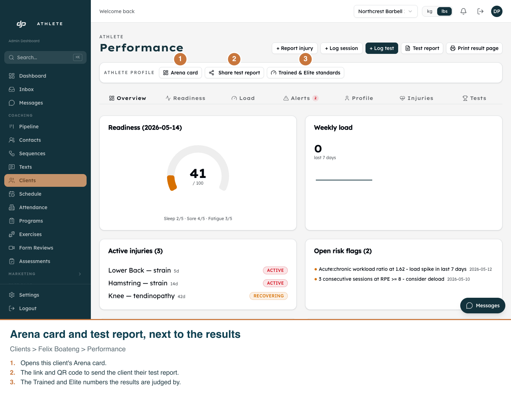
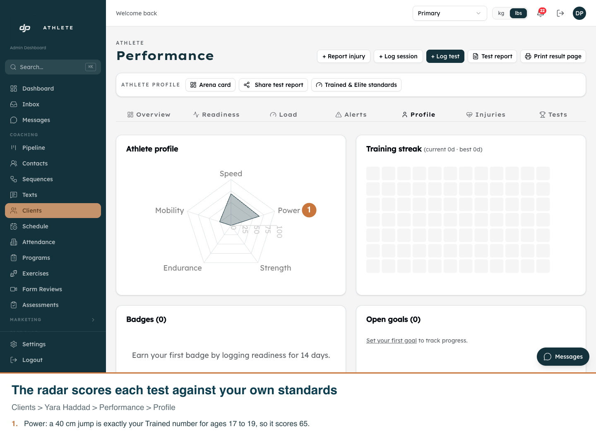
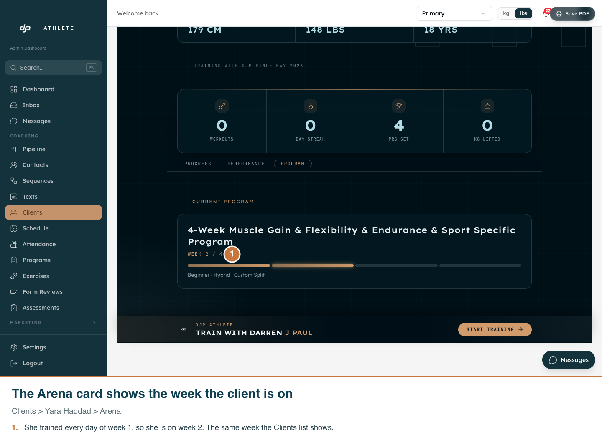
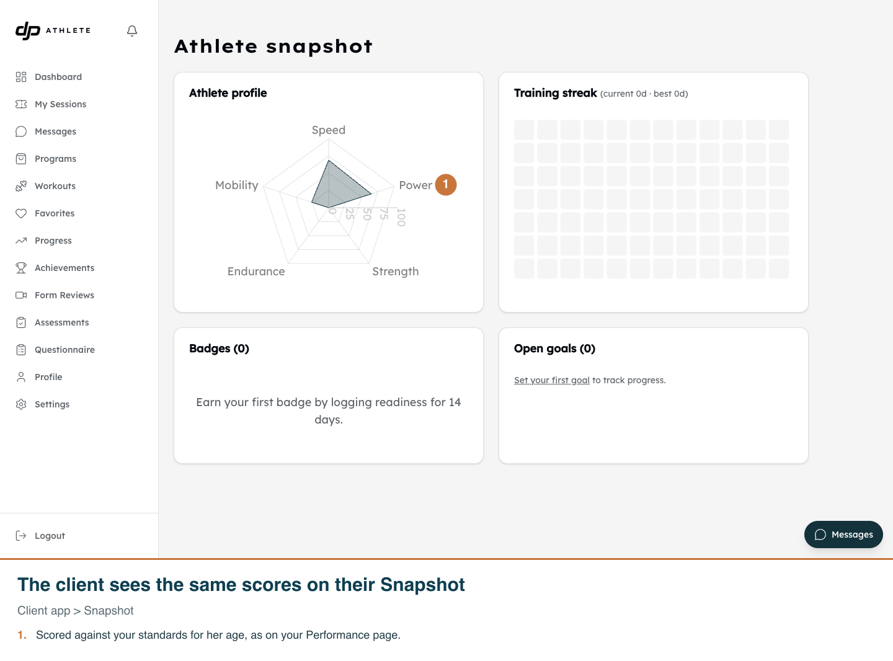
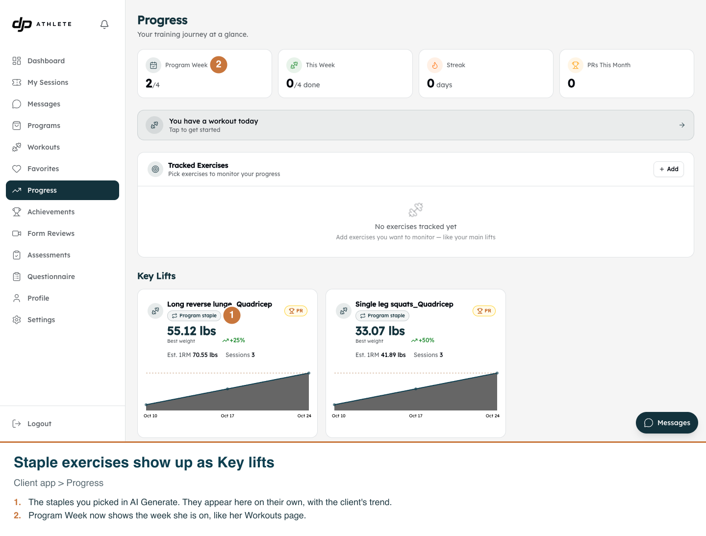

Performance: Trained & Elite standards, Arena card and assessments
Real app, development clone, light mode for the admin screens. Captured on 2026-10-30.
Re-run with scripts/capture-performance-standards.mjs, scripts/capture-performance-profile-bar.mjsscripts/capture-assessment-exercise-name.mjs and (08-11, captured 2026-10-31)
scripts/capture-performance-leftovers.mjs; all of them write into this folder.
Trained & Elite standards
01. Set your own numbers per test, and add age groups.02. The client's records on the Arena, judged against the numbers for their age.03. The link to change the numbers, at the top of the Arena.
Arena card and test report on the Performance page

04. Arena card, Share test report and the standards, next to the results.05. The client page now sends you to Performance.06. The Tests tab links to the standards its results are coloured against.
New assessment
07. One box for the exercise name: any name, or a library exercise picked by typing it.
The radar, the Arena week and staple exercises (2026-10-31)

08. The radar on Performance > Profile scores each test against your standards for the client's age.

09. The Arena card shows the week the client is on, as the Clients list does.

10. The client sees the same scores on their own Snapshot.

11. The program's staple exercises show up as Key lifts, and Program Week shows the week the client is on.